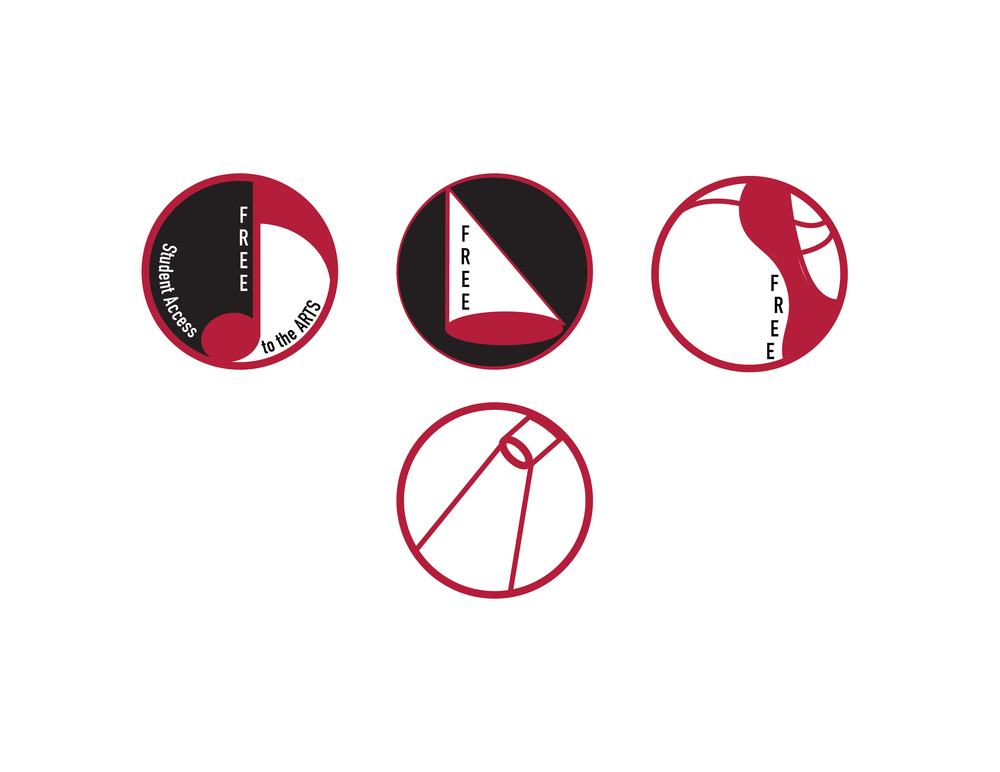
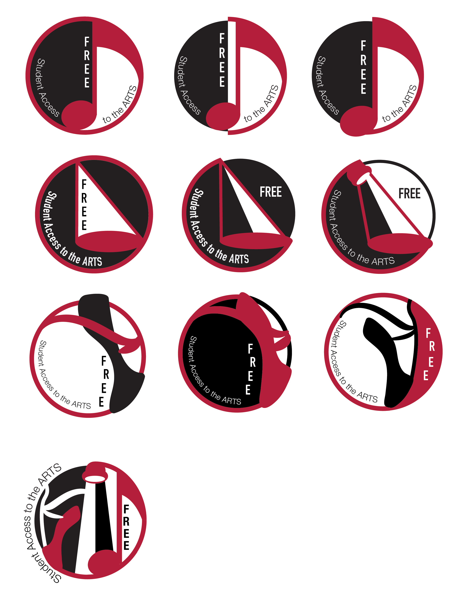
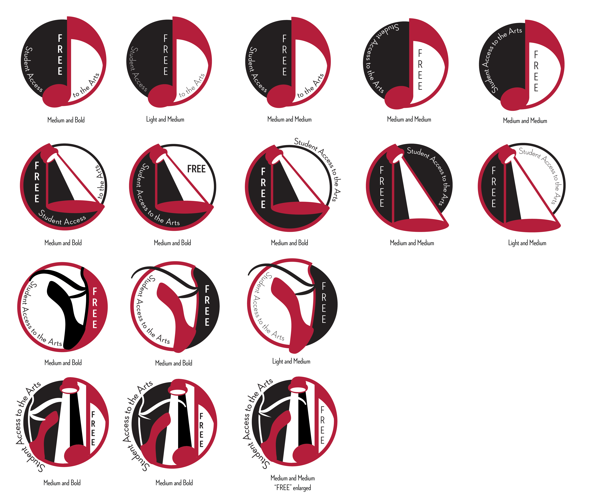

Icon and Poster Redesign
The aim of this redesign was to enhance existing assets in order to better communicate the program's message of providing complimentary tickets to students.
Original Designs
Desired revisions:
Design Process

First Draft
Initially, I had presented three rough variations of icons. This was the style and direction we decided to head in.

Second Draft
I further polished my icons, adhering to the same stylistic approach outlined in my proposal. It was important for the icons to clearly represent each department they were associated with.
